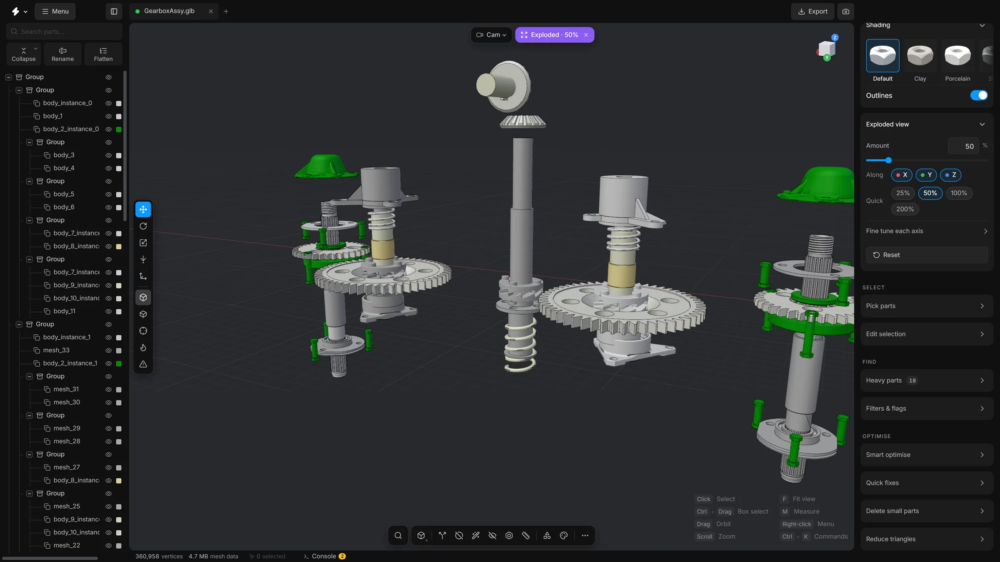

Exploded view
Push the parts of an assembly apart with one slider, choose the directions, and put them back with one click.
An exploded view moves every part away from the centre of the model, so parts that sit inside or behind others come into the open. It is a way of looking, like in an assembly manual.


Steps
- Open the card Exploded view in the right sidebar, under Inspect. If it is folded, click its header.
- Drag the Amount slider. The parts move apart. The value is a percentage, and the slider goes up to 300%. You can click the number and type one.
- Under Along, the buttons X, Y and Z say which directions the parts move in. All three are on to begin with. Switch one off and the parts stop moving along that axis. Switch it on again and they follow.
- Under Quick, press 25%, 50%, 100% or 200% to jump to that amount.
- Press Reset to bring every part back.
Fine tune each axis
Click Fine tune each axis to open three more sliders, X axis, Y axis and Z axis. Use them when you want a different amount in each direction, for example to pull a stack apart upwards a long way and sideways only a little. The Amount slider then follows the largest of the three.
While the view is exploded
- A pill that says Exploded, with the amount, appears at the top of the viewport beside the camera pill. Click it to put the parts back and set the sliders to zero.
- Moving a slider lets go of the selection. You can still click parts and see their outlines, but they have no gizmo to move them until the parts are back together.
- Smart fit and Fill holes work on the model at rest, then put the explosion back as it was.